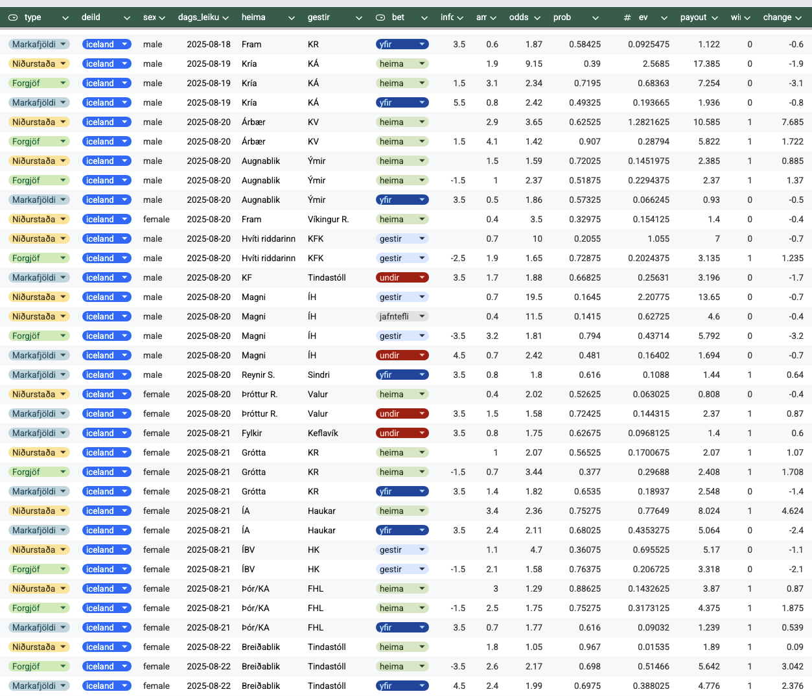

Getum við notað tölfræði til að finna hagstæð veðmál í íþróttum?
Íslenska stærðfræðafélagið
Háskóli Íslands
Eftirádreifing \[ p(\theta | X) \propto p(X | \theta) \cdot p(\theta) \]
Spádreifing: \[ p(X_{\text{new}} | X) = \int p(X_{\text{new}} | \theta) \cdot p(\theta | X) \, d\theta \]
Líkur á að vinna veðmál: \[ P(\text{vinna veðmál}) = P(X_{\text{new}} \in A | X) \]
Bradley-Terry og sushi
\[ \begin{aligned} P(i > j) &= \frac{e^{\lambda_i}}{e^{\lambda_i} + e^{\lambda_j}} \end{aligned} \]
\[ \begin{aligned} \text{logit}\, P(i > j) &= \lambda_i - \lambda_j \end{aligned} \]
\[ \begin{aligned} P_{\text{ELO}}(i > j) &= \frac{e^{\lambda_i/400}}{e^{\lambda_i/400} + e^{\lambda_j/400}} \end{aligned} \]
- Liðsstyrkur er breytilegur
- Fylgni í markafjölda
- Fleiri jafntefli
- Heimavallaráhrif
Við höfum \(K\) lið, \(k \in \{1, \ldots, K\}\) og metum styrk þeirra á tímum \(T\), \(t \in \{1, \ldots, T\}\).
\[ \begin{gathered} \text{off}_{k,t} = \text{off}_{k,t-1} + \sigma_{\text{off},k} \sqrt{\Delta ^t_k} \, \epsilon_{k,t}^{\text{off}} \qquad \text{def}_{k,t} = \text{def}_{k,t-1} + \sigma_{\text{def},k} \sqrt{\Delta ^t_k} \, \epsilon_{k,t}^{\text{def}} \end{gathered} \]
Segjum að lið \(i\) spili á heimavelli gegn liði \(j\).
\[ \begin{gathered} \text{off}_{i} = \text{off}_{i,t} + h^\text{off}_{i} \qquad \text{def}_{i} = \text{def}_{i,t} + h^\text{def}_{i} \\ \text{off}_{j} = \text{off}_{j,t} \qquad \text{def}_{j} = \text{def}_{j,t} \end{gathered} \]
Látum \(\mu_i\) og \(\mu_j\) vera væntan fjölda marka liðanna
\[ \begin{gathered} \log \mu_i = \mu_0 + \text{off}_{i} - \text{def}_{j} \qquad \log \mu_j = \mu_0 + \text{off}_{j} - \text{def}_{i} \end{gathered} \]
Þá gætum við prófað
\[ X_i \sim \text{Poisson}(\mu_i) \qquad X_j \sim \text{Poisson}(\mu_j) \]
Ekki endilega nóg af jafnteflum og vantar fylgni milli frammistöðu liðanna
Tvívíða Poisson dreifingin
\[ \begin{gathered} Z_1 \sim \text{Poisson}(\mu_1) \qquad Z_2 \sim \text{Poisson}(\mu_2) \qquad Z_3 \sim \text{Poisson}(\mu_3) \end{gathered} \]
Látum \(X_1\) og \(X_2\) vera fall af þremur Poisson dreifðum stærðum
\[ \begin{gathered} X_1 = Z_1 + Z_3 \qquad X_2 = Z_2 + Z_3 \end{gathered} \]
Þá vitum við að
\[ \begin{gathered} E[X_1] = E[Z_1] + E[Z_3] = \mu_1 + \mu_3 \qquad E[X_2] = E[Z_2] + E[Z_3] = \mu_2 + \mu_3 \end{gathered} \]
\[ \text{Corr}(X_1, X_2) = \frac{\mu_3}{\sqrt{\mu_1 \mu_2}} = \rho \]
Hvernig viljum við stika þetta?
Látum \(\rho\) vera fall af mismun á styrk liðanna
\[ \text{logit}(\rho) = \alpha_{\rho} + \beta_{\rho} \cdot \text{diff} \]
þar sem
\[ \text{diff} = |\text{off}_{i} + \text{def}_{i} - \text{off}_{j} - \text{def}_{j}| \]
Látum \(\rho\) vera fall af mismun á styrk liðanna
\[ \text{logit}(\rho) = \alpha_{\rho} + \beta_{\rho} \cdot \text{diff} \]
þar sem
\[ \text{diff} = |\text{off}_{i} + \text{def}_{i} - \text{off}_{j} - \text{def}_{j}| \]
Látum \(\rho\) vera fall af mismun á styrk liðanna
\[ \text{logit}(\rho) = \alpha_{\rho} + \beta_{\rho} \cdot \text{diff} \]
þar sem
\[ \text{diff} = |\text{off}_{i} + \text{def}_{i} - \text{off}_{j} - \text{def}_{j}| \]
Til að rifja upp
\[ \begin{gathered} \log \mu_i = \mu_0 + \text{off}_{i} - \text{def}_{j} \qquad \log \mu_j = \mu_0 + \text{off}_{j} - \text{def}_{i} \end{gathered} \]
Við metum \(\mu_3\) sem
\[ \log\mu_3 = \log \rho + 0.5 \cdot (\log\mu_i + \log\mu_j) \]
\[ \text{logit}(\rho) = \alpha_{\rho} + \beta_{\rho} \cdot \text{diff} \]
og stigafjöldi liðanna verður þá
\[ \begin{gathered} X_1 = Z_1 + Z_3 \qquad X_2 = Z_2 + Z_3 \end{gathered} \]
\[ \begin{gathered} Z_1 \sim \text{Poisson}(\mu_1) \qquad Z_2 \sim \text{Poisson}(\mu_2) \qquad Z_3 \sim \text{Poisson}(\mu_3) \end{gathered} \]
Eru fleiri jafntefli en við ættum von á?
\[ P(X_1 = x_1, X_2 = x_2) = \begin{cases} p \cdot \text{Poisson}(x_1; \mu_{\text{jt}}) \cdot \mathbf{1}_{x_1 = x_2} + (1-p) \cdot \text{BivPoisson}(x_1, x_2; \mu_1, \mu_2, \mu_3) & \text{if } x_1 = x_2 \\ (1-p) \cdot \text{BivPoisson}(x_1, x_2; \mu_1, \mu_2, \mu_3) & \text{if } x_1 \neq x_2 \end{cases} \]
\[ \text{logit}(p) = \alpha_p + \beta_p \cdot \text{diff} \]
Eru fleiri jafntefli en við ættum von á?
\[ P(X_1 = x_1, X_2 = x_2) = \begin{cases} p \cdot \text{Poisson}(x_1; \mu_{\text{jt}}) \cdot \mathbf{1}_{x_1 = x_2} + (1-p) \cdot \text{BivPoisson}(x_1, x_2; \mu_1, \mu_2, \mu_3) & \text{if } x_1 = x_2 \\ (1-p) \cdot \text{BivPoisson}(x_1, x_2; \mu_1, \mu_2, \mu_3) & \text{if } x_1 \neq x_2 \end{cases} \]
\[ \text{logit}(p) = \alpha_p + \beta_p \cdot \text{diff} \]
Eru fleiri jafntefli en við ættum von á?
\[ P(X_1 = x_1, X_2 = x_2) = \begin{cases} p \cdot \text{Poisson}(x_1; \mu_{\text{jt}}) \cdot \mathbf{1}_{x_1 = x_2} + (1-p) \cdot \text{BivPoisson}(x_1, x_2; \mu_1, \mu_2, \mu_3) & \text{if } x_1 = x_2 \\ (1-p) \cdot \text{BivPoisson}(x_1, x_2; \mu_1, \mu_2, \mu_3) & \text{if } x_1 \neq x_2 \end{cases} \]
\[ \text{logit}(p) = \alpha_p + \beta_p \cdot \text{diff} \]
Til að rifja upp
\[ \begin{gathered} \log \mu_i = \mu_0 + \text{off}_{i} - \text{def}_{j} \qquad \log \mu_j = \mu_0 + \text{off}_{j} - \text{def}_{i} \end{gathered} \]
Við metum \(\mu_3\) sem
\[ \log\mu_3 = \log \rho + 0.5 \cdot (\log\mu_i + \log\mu_j) \]
\[ \text{logit}(\rho) = \alpha_{\rho} + \beta_{\rho} \cdot \text{diff} \]
með líkum \(p = \text{invlogit}(\alpha_p + \beta_p \cdot \text{diff})\)
\[ X_1 \sim \text{Poisson}(\mu_{\text{jt}}) \qquad X_2 \sim \text{Poisson}(\mu_{\text{jt}}) \]
\[ \mu_{\text{jt}} = \frac{\mu_1 + \mu_2}{2} \]
með líkum \(1 - p\)
\[ \begin{gathered} X_1 = Z_1 + Z_3 \qquad X_2 = Z_2 + Z_3 \end{gathered} \]
\[ \begin{gathered} Z_1 \sim \text{Poisson}(\mu_1) \qquad Z_2 \sim \text{Poisson}(\mu_2) \\ Z_3 \sim \text{Poisson}(\mu_3) \end{gathered} \]
Við veðjum \(S\) á veðmál með stuðulinn \(o\)
\[ \text{R} = \begin{cases} o \cdot S \quad &\text{ef } f(X_1, X_2) \in A \\ 0 \qquad &\text{ef } f(X_1, X_2) \notin A \end{cases} \]
\[ G = R - S = \begin{cases} (o - 1) \cdot S \quad &\text{ef } f(X_1, X_2) \in A \\ -S \qquad &\text{ef } f(X_1, X_2) \notin A \end{cases} \]
Væntur gróði er \[ \mathbb E[G] = p \cdot (o - 1) - (1 - p) = p \cdot o - 1 = (p - \pi) \cdot o \]
Kelly hlutfallið
\[ f^* = \arg \max_{f} \mathbb E[\log (1 + f \cdot R)] \]
Kelly hlutfallið
\[ f^* = \frac{p \cdot (o - 1) - (1 - p)}{o - 1} = \frac{po - 1}{o - 1} = \frac{\mathbb E[G]}{o - 1} \]
\[ \max_{f_1, \ldots, f_n} \sum_{i=1}^n p_i \log(1 + f_i \cdot R_i) \]
- \(\sum_{i=1}^n f_i \leq 1\)
- \(f_i \geq 0\)
Kelly brotahlutfall
\[ f_{\text{raun}} = \alpha \cdot f^*_{\text{Kelly}} \]

\[ \begin{gathered} \mu_i = \mu_0^t + \text{off}_{i} - \text{def}_{j} \qquad \mu_j = \mu_0^t + \text{off}_{j} - \text{def}_{i} \end{gathered} \]
Í stað Poisson dreifingar kemur t-dreifingin
\[ \begin{pmatrix} X_i \\ X_j \end{pmatrix} \sim \text{student-t}\left(\begin{pmatrix} \mu_i \\ \mu_j \end{pmatrix}, \Sigma_{ij}, \nu\right) \]
Samdreifnifylkið fer eftir keppandi liðum
\[ \Sigma_{ij} = \begin{pmatrix} \sigma_i^2 & \rho \sigma_i \sigma_j \\ \rho \sigma_i \sigma_j & \sigma_j^2 \end{pmatrix} \]
\[ \begin{gathered} \mu_i = \mu_0^t + \text{off}_{i} - \text{def}_{j} \qquad \mu_j = \mu_0^t + \text{off}_{j} - \text{def}_{i} \end{gathered} \]
Í stað Poisson dreifingar kemur t-dreifingin
\[ \begin{pmatrix} X_i \\ X_j \end{pmatrix} \sim \text{student-t}\left(\begin{pmatrix} \mu_i \\ \mu_j \end{pmatrix}, \Sigma_{ij}, \nu\right) \]
Samdreifnifylkið fer eftir keppandi liðum
\[ \Sigma_{ij} = \begin{pmatrix} \sigma_i^2 & \rho \sigma_i \sigma_j \\ \rho \sigma_i \sigma_j & \sigma_j^2 \end{pmatrix} \]

- Við getum notað tölfræði til að finna hagstæð veðmál í íþróttum
- Það er mikil óvissa og best að fara með þessi fræði eins og venjulegar fjárfestingar
- Þróa líkan eitt skref í einu, veðja fyrst mjög litlu
- Greiningar og myndrit geta verið vinsæl afurð